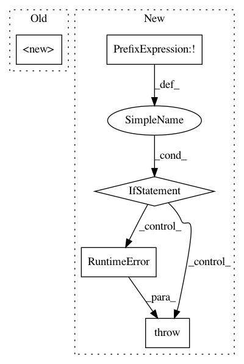

2de1df1704c1c187c72aacc15efcacd7029139dd,stellargraph/utils/saliency_maps/integrated_gradients.py,IntegratedGradients,__init__,#IntegratedGradients#Any#Any#,40
Before Change
def __init__(self, model, generator):
super().__init__(model, generator)
def get_integrated_node_masks(
self,
node_idx,
After Change
self._adj = generator.A_values
self._adj_inds = generator.A_indices
else:
if not isinstance(generator, FullBatchSequence):
raise TypeError(
"The generator supplied has to be an object of FullBatchSequence for dense adjacency matrix."
)
if len(model.input) != 3:
raise RuntimeError(
"Keras model for dense adjacency is expected to have three inputs"
)
self._adj = generator.A_dense
// Extract features from generator
In pattern: SUPERPATTERN
Frequency: 3
Non-data size: 5
Instances
Project Name: stellargraph/stellargraph
Commit Name: 2de1df1704c1c187c72aacc15efcacd7029139dd
Time: 2020-02-16
Author: kieranricardo@hotmail.com
File Name: stellargraph/utils/saliency_maps/integrated_gradients.py
Class Name: IntegratedGradients
Method Name: __init__
Project Name: vatlab/SoS
Commit Name: e15942dd6415dae2d97cfa583ab29f36f655e733
Time: 2016-12-29
Author: ben.bog@gmail.com
File Name: sos/sos_step.py
Class Name: Base_Step_Executor
Method Name: prepare_runtime
Project Name: vatlab/SoS
Commit Name: 9e36cd48e96f8323726e6808a689a426761b1237
Time: 2016-12-29
Author: ben.bog@gmail.com
File Name: sos/sos_step.py
Class Name: Base_Step_Executor
Method Name: prepare_runtime